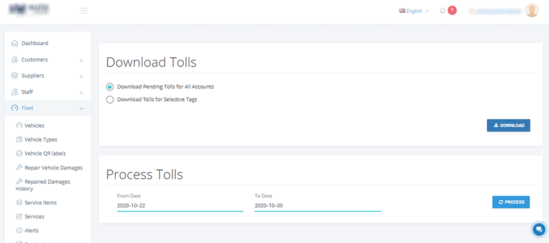

How to Download/Process Tolls
Go to the panel on the left side and click on the Fleet tab.
Scroll down and click on the Download/Process Tolls module.
Select a date range and click on the PROCESS button. No of processed tolls in total and with agreements will appear.
You can download this data by clicking on the DOWNLOAD button integrated on the top-right side of the window. Select one option between “Download Pending Tolls For All Accounts” and “Download Tolls for service Tags” before clicking on the DOWLOAD button.
Click HERE if you have a query or an issue.
